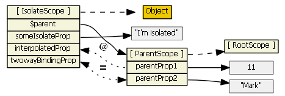
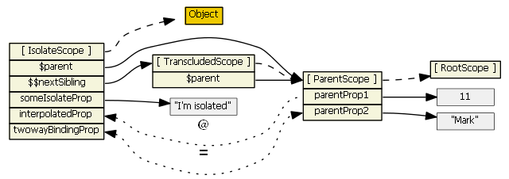

Какво са директивите?
Директивите са една от най-вълнуващите функционалности на AngularJS, тъй като са нещо специфично за Angular. Възможността да създаваш преизползваеми библиотеки от компоненти, които могат да бъдат използвани в приложенията като чист HTML е нещо изключително мощно и AngularJS единствен предоставя това на уеб разработчиците.
Съществуват няколко JavaScript продукти, които предлагат контроли за уеб приложенията. Например Bootstrap е една доста популярна front-end библиотека, която предоставя стилове за различните HTML елементи, както и някои JavaScript компоненти. Проблемът при тях е, че за да използва тези компоненти, програмистът трябва да премине в JavaScript режим и да напише някакъв JQuery код за да активира въпросните компоненти.
Директивите в Angular представляват маркери върху DOM елементите (като например атрибут, име на елемент или CSS клас), които казват на HTML компилатора на AngularJS ($compile), да приложи указаното поведение върху DOM елемента или дори да го трансформира по определен начин заедно с неговите деца.
Малко за HTML компилатора на AngularJS
HTML компилатора на AngularJS позволява на програмистите да научат браузъра на нов HTML синтаксис. Това се постига като се свързва определено поведение с даден HTML елемент или атрибут или дори чрез създаването на нови HTML елементи или атрибути – всичко това чрез директивите.
Компилаторът е Angular преглежда DOM-а, търсейки атрибути. Компилационният процес се състои от две фази:
- Compile: преглежда DOM-а, събирайки всички директиви. Резултатът от това е свъзраща функция.
- Link: комбинира директивите с област, в резултат на което се получава определен изглед. Всички промени в модела на областта се отразяват в изгледа и всяко взаймодействие на потребителя с изгледа се отразява в модела на областта. По този начин моделът се превръща в SSOT (single source of truth).
Имайки предвид това, директивите в AngularJS могат да бъдат определени като поведение, което трябва да бъде задействано когато определени HTML конструкции биват срещнати по време на компилационния процес.
Как Angular третира директивите?
Ще разгледаме как HTML компилатора на Angular определя кога да използва определена директива. Нека разгледаме следния HTML код:
<input ng-model=”foo” /> .
В този случай казваме, че <input> елементът отговаря на ngModel директивата. Всъщност, това можем да кажем и за следващия пример:
<input data-ng:model=”foo” />
Angular нормализира тага на елемента и името на атрибута, за да определи кои елементи на кои директиви съответстват. Стилът за описване на директиви задава тяхното име да е във формат camelCase (за нашия пример - ngModel). Но тъй като HTML по принцип не отчита големи и малки букви, в него директивите се реферират чрез използването на тире като разделител между отделните думи (ng-model).
Процесът по нормализация следва следните стъпки:
- Премахване на x- и data- от началото на елементите или атрибутите.
- Превръщане на :, - или _ разделителите в camelCase.
$compile може да разпознава директиви, описани като име на елемент, атрибут, име на клас или коментар. Всички вградени в Angular директиви могат да бъдат използвани чрез който и да е от четирите подхода:
<ng-model></ng-model>
<span ng-model=”expr”></span>
<!—- directive: ng-model expr -->
<span class=”ng-model: expr;”></span>
По принцип е препоръчително да се използват директивите чрез задаване на tag име или име на атрибут пред това чрез коментари или име на клас. Съображенията за това са, че кодът става по-четим и е по-лесно за хората да определят, че въпросният елемент е всъщност директива.
Директивите, зададени като коментар бяха доста често използвани в ситуации, когато създаването на директиви, които се прилагат върху много елементи (например в <table> елементи) има известни ограничения. AngularJS 1.2 въведе новите ng-repeat-start и ng-repeat-end като разрешение на този проблем.
Компилацията на HTML се случва в 3 фази:
$compile претърсва DOM-а и открива директивите. Ако компилаторът открие, че даден елемент съответства на някоя директива, то тази директива се добавя към списъка с директиви, съответстващи на DOM елемента.- Веднъж след като всички директиви, съответстващи на DOM елемента са идентифицирани, компилаторът сортира директивите по техния приоритет.
За всяка директива се изпълнава нейната compile функция, която има шанса да модифицира DOM-а. Всяка compile фунцкия връща link функция. Тези две функции се комбинират в една комбинирана свърваща функция.
$compile свързва темплейта с областта чрез извикването на комбинираната свързваща функция от предната стъпка.
Създаване на директиви
Първо ще видим как точно се регистрират директивите. Доста подобно на контролерите, директивите се регистрират в модули, като за целта се използва следният синтаксис: module.directive
module.directive приема като параметри нормализираното име на директивата, последвано от factory функция. Factory функцията се извиква само веднъж когато компилаторът срещне директивата за първи път. Всичкият код, свързан с инициализационната логика, следва да бъде сложен точно тук.
Съществуват много и най-различни опции за една директива. Разликата между отделните директиви се крие в това, което връща factory функцията, тъй като именно тя оказва на $compile как директивата следва да бъде третирана. Тази функция може да върне или Directive Definition Object, или просто postLink функция, като в този случай всички останали свойства ще имат стойности по подразбиране.
Сега ще разгледаме различните свойства, които може да има обекта, върнат от factory функцията:
-
priority
Когато имаме много директиви, дефинирани върху един DOM елемент, понякога имаме нужда да окажем реда, в който тези директиви трябва да се приложат. Свойството priority представлява число, което се използва за сортиране на директивите преди техните compile функции да бъдат извикани. Директивите с по-висок приоритет биват компилирани преди тези с по-нисък. Pre-link функциите също биват извиквани в ред на приоритета им, докато post-link – в обратен. Стойността по подразбиране за това свойство е 0.
-
scope
При зададена стойност true, за директивата ще бъде създадена нова област. Ако няколко директиви, дефинирани върху един и същ елемент изискват нова област, то само една такава ще бъде създадена.
При зададена стойност { }, ще бъде създадена нова изолирана област. „Изолираната“ област се различава от нормалната по това, че не наследява прототипно от областта на своя родител. Това е доста полезно когато се създават преизползваеми компоненти, които не трябва да четат или да модифицират информация в областта на своя родител. Въпреки това, в повечето случаи директивата ще трябва да има достъп до някои от свойствата в областта на своя родител. Това може да бъде осъществено чрез задаването на свойства в scope обекта. Тези свойства могат да имат следните стойности:
- @ или @attr – свързва свойство от локалната област със стойността на DOM атрибута. Резултата от това винаги е низ, тъй като DOM атрибутите са низове. Ако attr името не е споменато, то името на атрибута се очаква да бъде същото като локалното име. Когато в областта на родителя свойството с упоменатото име се променя, това ще рефлектира в промяна на свойството в локалната област. Обратното не е вярно.
- = или =attr – създава двупосочна връзка между свойството в локалната област и това в областта на родителя. Това означава, че когато в областта на родителя въпросното свойство се променя, тази промяна ще се отрази и в свойството в локалната област, както и обратното.
- & или &attr – осигуряват начин да се изпълни даден израз в контекста на областта на родителя. Това позволява на директивите да изпълнят някакво действие, различно от това просто да променят стойността на дадено свойство.
Всички тези локални свойства се наследяват по описания начин от областта на родителя. За тази цел просто описание в scope свойството на директивата не е достатъчно – DOM елементът трябва да има съответния атрибут със зададеното име, за да може директивата да останови необходимите връзки. Например, нека предположим, че в областта на родителя имаме свойство parentProp. Тогава следното описание на директивата:
<dir my-directive>
при положение че my-directive има област:
scope: { localProp: ‘@parentProp’ }
няма да резултира в свързване на localProp със стоийността на parentProp в родителя.
За да може това да се случи, директивата трябва да е описана по следния начин:
<dir my-directive the-parent-prop=”parentProp”>
, като областта на директивата е зададена по следния начин:
scope: { localProp: ‘@theParentProp’ }.
Сега нека предположим, че имаме следната директива:
angular.module('directives').directive('my-directive', function() {
return {
restrict: 'EA',
replace: false,
link: function (scope, element, attrs) {
scope.someIsolateProp = "I'm isolated";
},
scope: {
interpolatedProp: ‘@interpolated’,
twowayBindingProp: ‘=twowayBinding’
}
};
});
и в HTML-а директивата е използвана по следния начин:
<my-directive interpolated=”{{parentProp1}}” twowayBinding=”parentProp2”>
В този случай, връзката между областта на директивата и тази на нейния родител, може да бъде представена графично по следния начин:

-
controller
Контролерът представлява функция, която се извиква преди pre-linking фазата и се споделя между всички директиви от този тип, като това позволява на директивите да комуникират помежду си. Аргументите, които приема са както следва:
- $scope – текущата област, свързана с елемента
- $element – текущият елемент
- $attrs – обект, който съдържа текущите атрибути на елемента
- $transclude – transclude функцията, свързана с правилната област
-
require
Указва, че директивата се нуждае от друга директива. Контролерът на въпросната директива се предава като четвърти аргумент на свързващата функция (link function). Require приема низ, който представлява име на директивата, която да бъде предадена. В случай, че директивата има нужда от повече от една друга директива, на require се подава масив от низове, като инжектираният аргумент ще представлява масив от контролери в съответния ред. Имената на директивите, от които една директива има нужда, може да бъде префикснато с:
- (без префикс) – контролерът се търси в текущия елемент. Хвърля се грешка ако такъв не бъде намерен.
- ? – опитва се да намери въпросния контролер. Ако такъв не е намерен, се праща null към
link функцията.
- ^ – контролерът се търси в родителите на текущия елемент. Ако такъв не е намерен, се хвърля грешка.
- ?^ – контролерът се търси в родителите на текущия елемент и ако такъв не е намерен, се праща null към
link функцията.
-
restrict
Определя как директивата ще се използва в HTML-а. Валидните стойности са:
- 'А': атрибут (стойност по подразбиране),
- 'E': елемент,
- 'C': клас,
- 'М': коментар
Възможно е задаване на няколко от тези стойности, например 'АE', като в този случай директивата ще може да се използва и като елемент, и като атрибут в зависимост от предпочитанията на конкретния й ползвател.
-
template
Заменя текущия елемент със съдържанието на това свойство (, което трябва да е валиден HTML код). В процеса на замяна, всички атрибути и класове от стария елемент се прехвърлят към новия. Стойността на това свойство може да е низ или функция, която приема 2 аргумента – Element и tAttrs и връща низ.
-
templateUrl
Има същата функция като template, само че новото описание на елемента се зарежда от зададения URL. Тъй като зареждането на темплейта а асинхронна операция, фазите на компилиране и свързване се отлагат докато той се зареди. Аналогично на template, неговата стойност може да е стринг или функция. При по-големи темплейти, тази опция е за предпочитане пред предходната, тъй като води до по-четим код.
-
replace
Определя дали темплейтът на директивата ще замени оригиналния елемент или ще бъде добавен към него. Стойността по подразбиране е false, което запазва оригиналния елемент.
-
transclude
При задаване на стойност true, компилира съдържанието на елемента, правейки го достъпно за директивата. Обикновено се използва в комбинация с ngTransclude. Съдържанието на директивата ще бъде в нова изолирана област, като $parent свойството от областта на директивата и от областите на нейните деца ще сочи към една и съща област. Всъщност, когато имаме едновременно изолирана и трансклудната област, свойството на изолираната област $nextSibling ще представлява референция към трансклуднатата област. Нека представим всичко това графично, като за целта приемем, че my-directive директивата, описана по-горе има зададено trasnclude: true

-
compile
В тази функция се извършват трансформации на темплейта на елемента. Тази функция се използва доста рядко, тъй като повечето директиви нямат нуждата да извършват такива трансформации. Пример за директиви, които използват compile функцията са ngView и ngRepeat. Compile функцията има следната сигнатура:
function compile(tElement, tAttrs) { ... }
, като аргументите й са както следва:
- tElement (template element) – елементът, върху който директивата е била дефинирана. Безопасно е да се модифицират темплейтите единствено на елемента и на неговите деца.
- tAttrs (template attributes) – нормализиран списък от атрибутите, дефинирани върху елемента.
Compile функцията може да връща стойност, която трябва да е или функция, или обект:
- връщането на
post-link функция е еквивалентно на регистрирането на свързваща функция чрез link свойството на обекта, когато compile функцията е празна.
- връщането на обект, притежаващ свойства
pre и post със стойност функция, позволява контрол върху това кога свързващата функция ще бъде извикана по време на свързващата фаза.
-
link
Това свойство се използва, само когато compile свойството не е дефинирано. Стойността на link свойството е функция със следната сигнатура:
function link(scope, iElement, iAttrs, controller, transcludeFn) { ... }
Link функцията се изпълнява след като темплейтът е бил клониран. Именно тук се намира повечето от логиката на директивата.
- scope – областта, която ще се използва от директивата за регистриране на watches.
- iElement (instance element) – елементът, върху който се използва директивата. Децата на елемента е безопасно да бъдат манипулирани само в
postLink функцията, когато те вече са свързани.
- iAttrs (instance attributes) – нормализиран списък от атрибутите, дефинирани върху този елемент. Този списък е един и същ за всички свързващи функции на директивата.
- controller (controller instance) – инстанция на контролера, ако поне една директива върху елемента дефинира контролер. Контролерът се споделя от всички директиви, което им позволява да комуникират помежду си чрез него.
- transcludeFn –
transclude функцията, свързана с правилната област на действие. Тази функция приема опционален първи параметър, който може да зададе нова стойност на областта.
-
pre-linking function
Изпълнява се преди децата на директивата да бъдат свързани. В тази функция не е безопасно да се прави трансформация на DOM елемента, тъй като свързващата функция на компилатора няма да успее да намери правилните елементи за свързване.
-
post-linking function
Изпълнява се след като децата на директивата са вече свързани. Тук вече е безопасно да се извършва модификация на DOM.
Директива за документ
В тази секция ще създадем директивата sc-document, представляваща документ, която има атрибут nav-menu. Ако този атрибут има стойност true, то документът ще има навигационно меню, насочващо потребителя към дадена тема от документа. Нега сега разгледаме обектът, връщан от тази директива:
{
restrict: 'E',
replace: true,
transclude: true,
scope: {
navMenu: '@'
},
compile: DocumentCompile,
template: '<div class="row">' +
'<sc-nav nav-list="navList" class="col-lg-2 col-md-3 col-sm-3 hidden-phone menu" ng-if="navMenu">' +
'</sc-nav>' +
'<section ng-transclude>' +
'</section>' +
'</div>'
};
Този обект ни казва няколко неща:
- директивата следва да бъде използвана единствено като елемент
- при наличието на атрибут
nav-menu със стойност true, тя създава sc-nav директива с атрибут nav-list, съдържащ стойността на локалното свойство navList.
- при компилация се извиква функцията
DocumentCompile
function DocumentCompile (tElement, tAttrs) {
var section = angular.element(tElement.find('section')[0]);
if (tAttrs.navMenu === 'true') {
section.attr('class', 'col-lg-8 col-lg-offset-4 col-md-8 col-md-offset-4 col-sm-8 col-sm-offset-4');
}
return DocumentLink;
}
Тази функция прави 2 неща:
- при наличието на атрибут navMenu със стойност true, задава на съдържанието на документа определени CSS класове, които намалят неговата ширина при различните резолюции, така че да не се застъпва с навигационното меню
- връща
link функцията
function DocumentLink ($scope, $element) {
if (!$scope.navMenu) {
return;
}
var articles = $element.find('article');
$scope.navList = [];
angular.forEach(articles, function (article) {
$scope.navList.push({
name: angular.element(article).find('h2')[0].textContent,
id: article.id,
selected: false
});
});
angular.element($window).bind("scroll", function() {
var screenTop = $window.pageYOffset,
screenBottom = $window.innerHeight + $window.pageYOffset,
visibleOnScreen,
currentArticle;
visibleOnScreen = _.filter(articles, function (article) {
return article.offsetTop >= screenTop &&
article.offsetTop < screenBottom ||
article.offsetTop <= screenTop &&
article.offsetHeight + article.offsetTop >= screenBottom;
});
currentArticle = _.first(visibleOnScreen);
if (currentArticle) {
$scope.navList.map(function (elem) {
elem.selected = false;
});
var currentNavItem = _.find($scope.navList, function (navItem) {
return navItem.id == currentArticle.id;
});
currentNavItem.selected = true;
$scope.$digest();
}
});
}
Тази функция намира всички елементи <article>, които са деца на <sc-document> директивата и на базата на тях конструира navList списъка, съдържащ обекти, които имат свойства:
- name – заглавието на статията,
- id – нейното id
- selected – булева стойност, показваща дали това е текущо гледаната статия.
Този списък се използва от sc-nav директивата, която ще разгледаме след малко.
След това DocumentLink функцията се регистрира за scroll event-a на прозореца, като когато той настъпи се определя коя е текущата статия и на съответстващия й обект в navList списъка се задава стойност true на свойството selected.
Най-накрая ще разгледаме и sc-nav директивата. Тази директива връща следния обект:
{
restrict: 'E',
replace: true,
scope: { navList: '=' },
template: '<div>' +
'<a ng-repeat="nav in navList" ' +
'ng-class="{ selected: nav.selected}"' +
'ng-click="select(nav)"$gt' +
'{{nav.name}}' +
'</a>' +
'</div>',
link: NavLink
};
, който определя , че:
- директивата следва да се използва като HTML елемент
- тя очаква атрибут
nav-list, който свързва чрез двупосочна връзка със свойството в sc-document директивата. Благодарение на тази връзка промените, които правим в sc-document директивата при настъпване на събитието „скролване“ се отразяват и в sc-nav директивата.
- директивата създава
<a> елементи, които съответстват на обектите в navList списъка. Текстът на тези елементи се взима от name свойството на обекта, а при кликване върху тях се извиква функция с име select, на която се подава като единствен аргумент обектът, който представлява <a> елемента. Ако някой от обектите в списъка има стойност true за свойството selected, то му се прилага CSS класът selected.
NavLink функцията, реферирана в горния обект, изглежда по следния начин:
function NavLink ($scope) {
$scope.select = function (nav) {
if (nav.selected === true) {
return;
}
$scope.navList.map(function (elem) {
elem.selected = false;
});
nav.selected = true;
$location.hash(nav.id);
$anchorScroll();
}
}
Единственото, което прави NavLink функцията е да дефинира select функцията, използвана от <a> децата на sc-nav директивата.
Sc-document директивата беше използвана за направата на тази HTML страница, така че читателят да може да види резултата от нейното прилагане.
Защо да създаваме собствени директиви?
Тъй като AngularJS директивите са доста полезни и не толкова трудни за писане, много хора вече са насочили своите усилия в това да създават директиви за някои от по-популярните библиотеки. Например, AngularJS екипът вече е създал доста директиви за Bootstrap, наречени UI Bootstrap, ComponentOne въвежда свои AngularJS директиви с Wijmo библиотеката и има доста директиви, написани за jQueryUI.
Но, след като има толкова много източници на вече създадени директиви, какъв е смисълът да се учим как да ги създаваме самите ние? Ето няколко причини за това:
-
Може да имате нужда от някакъв специфичен компонент
Нека си представим за момент, че работим за някоя финансова компания, която използва определен вид форма в много приложения. Формата може да бъде имплементирана като grid с някаква специфична функционалност, като например да сваля данните по определен начин, да променя и валидира данните и да изпраща промените обратно към сървъра. В повечето случаи едва ли някой, извън нашата фирма, ще има нещо, което да задоволи тези нужди. Но за сметка на това, ние можем да си напишем собствена директива, която да бъде на разположение на всички HTML разработчици в нашия екип и която ще спести доста HTML код, позволявайки им да напишат нещо подобно:
<body ng-app=”abcFinance”>
<h3>Offshore Investment Summary</h3>
<abc-investment-form
customer=”currentCustomer”
country=”currentCountry”>
</abc-investment-form>
</body>
abcInvestmentForm директивата може да бъде използвана в доста приложения, осигурявайки консистентност на кода. Директивата може да бъде лесно поддържана и обновявана, така че да отговаря на новите бизнес практики и изисквания със съвсем малко усилия.
-
Може би директивата, от която имаш нужда още не съществува
Може би се е случило така, че си харесал дадена библиотека, за която още никой не е написал директиви и нямаш възможност да чакаш повече. Или може би не харесваш директивите, които си намерил или искаш някакво подобрено подобие на тях.